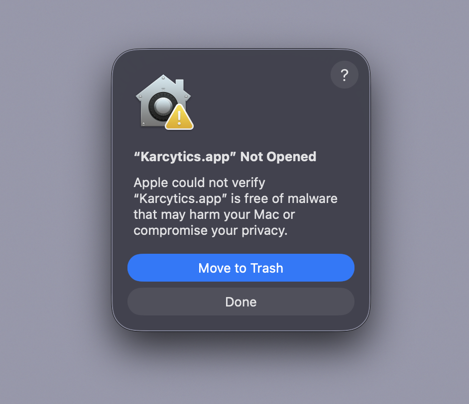
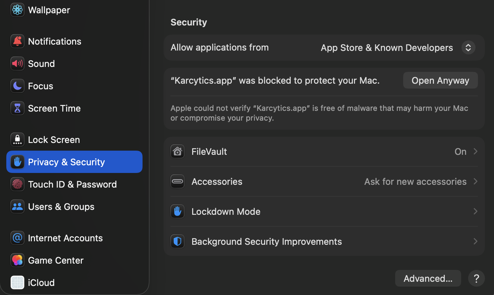
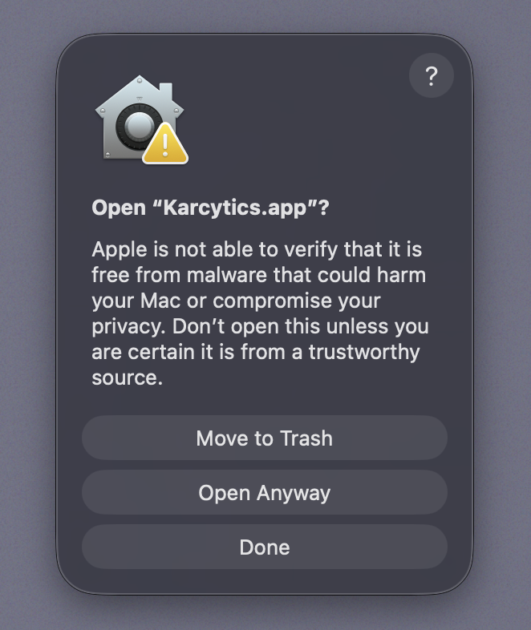

Installation
Karcytics is distributed as a desktop application with a lightweight plugin ecosystem. Install the main app once, then add analysis modules from the in-app Plugin Store when you need them.
Before you begin
Use the official GitHub release page for the latest download:
Choose the build that matches your system:
Karcytics-Windows.zipfor WindowsKarcytics-macOS.tar.gzfor macOS
[!NOTE] If you are running a source build or developer version, use the repository README and local setup instructions instead of the packaged app flow.

Quick install summary
flowchart TD
A[Download release] --> B[Extract app]
B --> C[Launch Karcytics]
C --> D[Create or open a project]
D --> E[Install a plugin]
E --> F[Run your first analysis]Windows installation
- Download
Karcytics-Windows.zipfrom the latest GitHub release. - Extract the ZIP to any location, for example
C:\Users\<you>\Documents\Karcytics. - Open the extracted folder and double-click
Karcytics.exeto launch the app. - If Windows SmartScreen shows a warning, choose More info and then Run anyway only if you trust the source.
[!NOTE] Keep the extracted folder in a stable location. If you move or rename the app folder after installation, local plugin data and project settings may become harder to resolve.
First launch on Windows
The first time you launch Karcytics, it creates application state in your home directory under ~/.karcytics.
This folder stores:
- installed plugins
- trusted developer keys
- logs
- project history metadata
macOS installation
- Download
Karcytics-macOS.tar.gzfrom the latest GitHub release. - Double-click the downloaded file to unpack the
Karcytics.appbundle. - Drag
Karcytics.appinto your Applications folder. - Open
Karcytics.appfrom Applications.
Gatekeeper / macOS security
On first launch, macOS may block the app because it is not signed through the App Store workflow.
Please follow these steps:
Do NOT click 'Move to Trash'! Instead, click 'Done'.

Open System Settings and click on Privacy & Security. Scroll down to the very bottom and click on Open Anyway.

You will be prompted here again. Make sure to click Open Anyway. You may be asked to authenticate yourself to allow the bypass.

You might be asked to allow Karcytics access to the local network. Click Allow to allow Karcytics access so that the marketplace can function properly.
[!WARNING] Only override Gatekeeper when you downloaded Karcytics from the official repository and release page.
Installing analysis modules
Karcytics itself is the host application. Analysis tools are delivered as plugins and installed inside the app.
- Launch Karcytics.
- From the Project Hub, click Marketplace.
- Browse or search for a module.
- Click Install to download and enable it.
- Return to the home screen and launch the module from the installed list.
[!TIP] The Plugin Store includes filters such as All Modules, Available Updates and Installed.
Updating Karcytics and modules
Karcytics uses a split-update model:
-
Core app updates are released from the GitHub Releases page. If you ever need to update your core app (you'll know by a banner in the hub), you will need to return to the releases page and follow the installation instructions. Make sure to delete the old core app before installing the new one! Your modules, preferences and other settings will not be affected.
-
Module updates are handled from the Plugin Store. If you ever need to update a module, you can do so from the Plugin Store by clicking on marketplace and simply clicking update!
Core app update notifications
When the Project Hub starts, Karcytics checks for a new core version.
- If an update is available, a banner appears in the Hub.
- Click Download Now to open the latest release page.
- Click Skip This Version if you want to keep the current version temporarily.
Supported platforms
Karcytics is primarily supported on modern Windows and macOS systems. Linux builds may be available through source or developer builds, but the main packaged experience is focused on Windows and macOS.
Troubleshooting installation
If the app doesn't open:
- verify the archive extracted completely
- make sure
Karcytics.exeorKarcytics.appis still present - check your computer has permission to access the folder you extracted into
If a plugin won't install:
- confirm your internet connection
- check that the release page is reachable
- retry installation from the Plugin Store
[!NOTE] Application logs are stored in
~/.karcytics/karcytics.log. You can inspect them from the Help menu once Karcytics is running.
What’s next?
- Getting Started — create a project and learn the Hub
- Plugin Store & Security — understand trust and module safety
- FAQ & Troubleshooting — solve common problems quickly